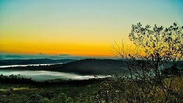
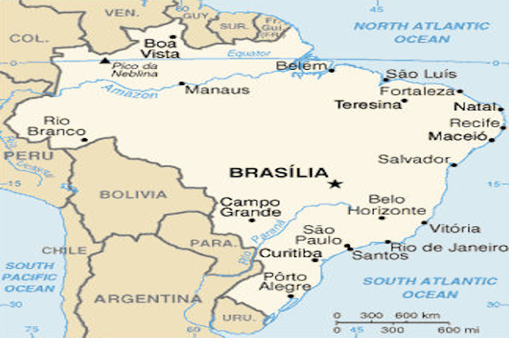

Climate
The climate of Brazil is mostly tropical, however in the southern end of the country it is more temperate.
If you want to use columns, I highly recommend building 2 websites , one for normal traffic and the other exclusively for mobile devices.

Did you know?
Brazil is the largest coffee producer in the world.
The most common last name in Brazil is Silva.
The national Brazilian soccer team is the only team to participate in every World Cup Tournament to date.
BRAZIL
Where is Brazil?
Brazil is located on the eastern side of the South American Continent. Brazil borders many countries, such as: Bolivia, Columbia, Paraguay and Peru. The capital of Brazil is Brazillia.

History
Brazil was originally founded on April 22, 1500, by a Portuguese explorer names Pedro Alvarez Cabral, and thus became a colony of Portugal from the 16th to the 19th centuries.
Brazil declared it’s independence from Portugal on September 7, 1822, and became a monarchy. The country has seen dictatorships in the early 1930’s and a period of military rule from the mid 1960’s to the mid 1980’s.
People of Brazil
The population of Brazil is approximately 184 million and the ethnic make up of the country is mostly white, which includes Portuguese, German, Italian, Spanish and Polish, and also includes a mixed background of white and black. There are also small groups of Japanese, Arab, and Amerindian.
Brazil is working hard preparing to host the Olympics in 2016.